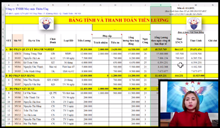
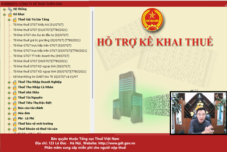
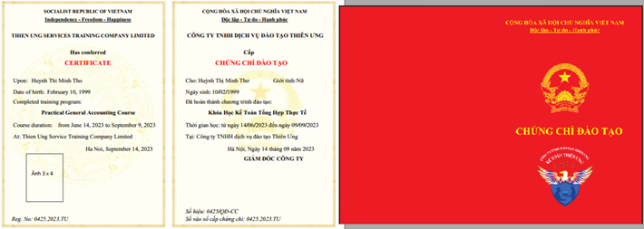

Khóa Học Kế Toán Tổng Hợp Trọn Gói là khóa học dạy cả lý thuyết và thực hành trên hóa đơn chứng từ thực tế và các phần mềm kế toán
Đây là khóa học dành cho những đối tượng sau:
+ Dành cho người mới bắt đầu, người chưa học về kế toán như:
+ Các bạn học ngành khác muốn chuyển sang làm kế toán
+ Giám đốc, quản lý doanh nghiệp, quản lý tài chính, nhân sự... muốn học để kiểm tra, giám sát, quản lý bộ máy kế toán của Doanh nghiệp trong từng phần hành.
+ Dành cho các bạn đã học về kế toán nhưng học lâu rồi nên giờ bị quên cần học lại để bổ sung, cập nhật kiến thức để có thể làm được công việc của kế toán.
=> Khóa học kế toán tổng hợp trọn gói này phù hợp với mọi đối tượng (bất kể ai muốn biết, muốn có kỹ năng, kinh nghiệm làm kế toán thuế, kế toán tổng hợp… đều có thể tham gia được khóa học này)
Tổng số buổi học: 46 Buổi
Được chia làm 2 phần chính như sau:
+ Phần 1: Nguyên lý kế toán (Đây là những kiến thức cơ bản, nền tảng của nghề kế toán): 9 buổi
=> Dạy cách tạo lập hồ sơ chứng từ kế toán => Xử lý các nghiệp vụ kế toán bằng tình huống và chứng từ thực tế => Định khoản, hạch toán các nghiệp vụ kinh tế phát sinh đó => Đây là những công việc, nghiệp vụ mà kế toán tổng hợp vẫn phải làm hàng ngày trong doanh nghiệp thực tế
+ Phần 2: Học thực hành thực tế: 37 buổi
Dạy cách xử lý hóa đơn chứng từ => Thực hành kê khai, làm báo cáo Thuế => Làm kế toán tiền lương, bảo hiểm, kế toán kho, công nợ, giá thành... => Thực hành sổ sách, lập báo cáo tài chính trên Excel và cả phần mềm kế toán Misa...
Chi tiết nội dung chương trình đào tạo của từng phần như sau:
Tại phần này thì các bạn sẽ được chia sẻ cách kiểm tra, đối chiếu số liệu trên sổ sách kế toán và cách khắc phục, điều chỉnh các sai sót (nếu có)...và còn nhiều nội dung khác nữa
3. Thực hành làm kế toán thuế (17 buổi)
Tại phần này thì Kế toán Diệu Tâm sẽ hướng dẫn các bạn các nội dung chính sau:
Hình thức giảng dạy: Dạy online (Trực tuyến qua mạng) (Có giáo viên trực tiếp đứng lớp hướng dẫn thực hành và có giáo viên lưu động để hỗ trợ giải đáp vướng mắc trong quá trình học)
* Phần 1: Nguyên Lý Kế Toán Thực Tế
Các bạn muốn làm được sổ sách kế toán thì các bạn phải biết cách định khoản, hạch toán ghi sổ trước => Do đó, trước khi đi vào học thực hành thực tế thì các bạn sẽ có 9 buổi để học về các nội dung sau:
Các bạn muốn làm được sổ sách kế toán thì các bạn phải biết cách định khoản, hạch toán ghi sổ trước => Do đó, trước khi đi vào học thực hành thực tế thì các bạn sẽ có 9 buổi để học về các nội dung sau:
+ Dạy cách tạo lập hồ sơ, chứng từ kế toán như phiếu thu, phiếu chi, phiếu nhập, phiếu xuất...
+ Hướng dẫn cách phân tích, xử lý nghiệp vụ kế toán trước khi tiến hành định khoản hạch toán để ghi sổ kế toán
+ Dạy cách định khoản hạch toán chuẩn theo từng nghiệp vụ kế toán trong doanh nghiệp như: nghiệp vụ về kế toán tiền lương, bảo hiểm, công nợ, kế toán kho, CCDC, TSCĐ...
+ Thực hành làm bài tập tổng hợp theo số liệu, công việc cụ thể của 1 doanh nghiệp từ khi mới bắt đầu thành lập cho đến khi hoạt động sản xuất kinh doanh ổn định...
=> Chi tiết hơn về nội dung đào tạo trong từng buổi học thì các bạn xem tại đây nhé: Khóa Học Nguyên Lý Kế Toán Thực Tế
* Phần 2: Thực hành làm kế toán tổng hợp trên hóa đơn chứng từ thực tế và các phần mềm kế toán
Với 3 nội dung chính như sau:
1. Thực hành làm số sách kế toán trên Excel (10 buổi)
Sau khi các bạn đã biết định khoản hạch toán chuẩn rồi thì các bạn chuyển sang học thực hành làm sổ sách kế toán trên Excel
=> Công ty đào tạo Kế toán Diệu Tâm sẽ cung cấp cho các bạn 1 file "Mẫu sổ sách kế toán trên Excel" với đầy đủ các sổ sách, báo cáo, bảng biểu mà kế toán hiện nay đang làm việc trong doanh nghiệp thực tế để thực hành các nội dung chính như sau:
Sau khi các bạn đã biết định khoản hạch toán chuẩn rồi thì các bạn chuyển sang học thực hành làm sổ sách kế toán trên Excel
=> Công ty đào tạo Kế toán Diệu Tâm sẽ cung cấp cho các bạn 1 file "Mẫu sổ sách kế toán trên Excel" với đầy đủ các sổ sách, báo cáo, bảng biểu mà kế toán hiện nay đang làm việc trong doanh nghiệp thực tế để thực hành các nội dung chính như sau:
+ Thực hành làm bảng tính lương, trích bảo hiểm, phân bổ chi phí trả trước, trích khấu hao TSCĐ, tính giá nhập kho, xuất kho => lập bảng tổng hợp Nhập - Xuất - Tồn kho, theo dõi công nợ...
+ Thực hành xử lý các nghiệp vụ kế toán, hoàn thiện hồ sơ chứng từ kế toán... => Đây chính là căn cứ để kế toán tiến hành ghi sổ kế toán => Thực hành làm sổ sách kế toán, lập báo cáo tài chính cuối năm trên Excel

Tại phần này thì các bạn sẽ được chia sẻ cách kiểm tra, đối chiếu số liệu trên sổ sách kế toán và cách khắc phục, điều chỉnh các sai sót (nếu có)...và còn nhiều nội dung khác nữa
=> Chi tiết hơn về nội dung đào tạo trong từng buổi học thì các bạn xem tại đây nhé: Khóa Học Thực Hành Kế Toán Trên Excel
2. Thực hành làm số sách kế toán trên phần mềm kế toán Misa (10 buổi)
Học phần Excel là để các bạn biết quy trình luân chuyển chứng từ, biết mỗi quan hệ giữa các sổ sách báo cáo trong doanh nghiệp và biết số liệu được liên kết với nhau như nào, nguồn số liệu được lấy từ đâu
Còn sang phần Misa thì đây là chúng ta thực hành ghi sổ trên phần mềm kế toán nên có tính tự động cao và hỗ trợ rất nhiều trong công tác kế toán => Các bạn sẽ tập trung vào việc học cách sử dụng phần mềm để học các kiến thức sau:
Còn sang phần Misa thì đây là chúng ta thực hành ghi sổ trên phần mềm kế toán nên có tính tự động cao và hỗ trợ rất nhiều trong công tác kế toán => Các bạn sẽ tập trung vào việc học cách sử dụng phần mềm để học các kiến thức sau:
+ Thực hành xử lý các nghiệp vụ kế toán, hoàn thiện hồ sơ chứng từ kế toán... => Rồi sau đó mới tiến hành ghi sổ kế toán trên phần mềm kế toán Misa
(Tại phần này thì các bạn cũng được học đầy đủ các nghiệp vụ như kế toán tiền lương, bảo hiểm, công nợ, kế toán kho, CCDC, TSCĐ, thuế…)
+ Học cách tập hợp chi phí để tính giá thành sản phẩm dịch vụ
+ Thực hành làm sổ sách kế toán, lập báo cáo tài chính trên phần mềm kế toán Misa
Tại phần này thì các bạn sẽ được chia sẻ cách kiểm tra, đối chiếu số liệu sổ sách kế toán trên phần mềm Misa và cách khắc phục, điều chỉnh các sai sót (nếu có)... và còn nhiều nội dung khác nữa
=> Chi tiết hơn về nội dung đào tạo trong từng buổi học thì các bạn xem tại đây nhé: Khóa Học Thực Hành Kế Toán Trên Phần Mềm Misa
3. Thực hành làm kế toán thuế (17 buổi)
Tại phần này thì Kế toán Diệu Tâm sẽ hướng dẫn các bạn các nội dung chính sau:
+ Dạy thực hành xử lý hóa đơn, chứng từ kế toán => Thực hành kê khai, làm các loại báo cáo Thuế theo tháng, theo quý và quyết toán thuế cuối năm
+ Dạy kỹ năng xử lý các tình huống kế toán thuế trong thực tế, cách kê khai điều chỉnh bổ sung, khắc phục các sai sót trong báo cáo thuế, giải trình số liệu với cơ quan thuế…

+ Chia sẻ các kỹ năng, kinh nghiệm làm kế toán thuế như cân đối lãi lỗ, tối ưu thuế để tiết kiệm số thuế phải nộp cho từng loại thuế cụ thể… Cách phòng tránh các rủi ro trong công tác kế toán thuế tại doanh nghiệp.
+ …….. (và còn nhiều nội dung khác nữa).
=> Chi tiết hơn về nội dung đào tạo trong từng buổi học thì các bạn xem tại đây nhé: Khóa Học Thực Hành Kế Toán Thuế
------------------------------------------------------------------
---------------------------------------------------------------------------
Học phí của khóa học "Thực Hành Kế Toán Tổng Hợp Trọn Gói" dành cho người mới bắt đầu hoặc đã quên:
Học phí chưa giảm là: 5.000.000đ
Công ty TNHH Tư vấn & Đào tạo Diệu Tâm đang có khuyến mại lớn đó bạn ạ! Chi tiết bạn xem tại đây nha: Khuyến mại học phí của Kế toán Diệu Tâm
Hoặc các bạn có thể liên hệ với Hotline: 0987.026.515 (Call or Zalo) để được tư vấn kỹ hơn
-------------------------------------------------------------------------------------
----------------------------------------------------------
Thời gian học: Học theo ca - theo lớp. Bạn có thể chọn 1 trong các ca dưới đây:
+ Trong ngày: bạn có thể chọn 1 trong 3 ca:
+/ Sáng 8h30 - 11h,
+/ Chiều 14h - 16h30,
+/ Tối 19h - 21h30.
+ Trong tuần: 1 tuần có thể học từ 3 - 6 buổi (Bạn có thể chọn học vào các ngày thứ 2 - 4 - 6 hoặc các ngày thứ 3 - 5 - 7 hoặc học cả tuần từ thứ 2 đến thứ 7)
----------------------------------------------------------
----------------------------------------------------------
Giảng Viên: đều là các kế toán trưởng, kế toán thuế đã và đang đi làm thực tế nhiều năm. Được trang bị kỹ năng sư phạm, luôn thân thiện và nhiệt tình trong quá trình giảng dạy.
Chứng chỉ: Sau khi học xong bạn sẽ cấp chứng chỉ "Khóa Học Kế Toán Tổng Hợp Thực Tế"
---------------------------------------------------------
+ Học bù: Khi bạn có việc bận thì bạn sẽ được sắp xếp học bù
Công ty TNHH Tư vấn & Đào tạo Diệu Tâm sẽ sắp xếp buổi học bù gần nhất cho bạn, đảm bảo việc học được xuyên suốt không bị ngắt quãng.
+ Học lại: Bạn có thể đăng ký học lại một lần hoặc nhiều lần theo quy định của Công ty TNHH Tư vấn & Đào tạo Diệu Tâm
---------------------------------------------
Công ty TNHH Tư vấn & Đào tạo Diệu Tâm không giới hạn thời gian học, thời gian thực hành
=> Dạy đến khi nào bạn tự tin làm được việc thì thôi
Công ty TNHH Tư vấn & Đào tạo Diệu Tâm không giới hạn thời gian học, thời gian thực hành
=> Dạy đến khi nào bạn tự tin làm được việc thì thôi
Và đặc biệt là khi học bù, học lại bạn sẽ không phải đóng thêm học phí.
---------------------------------------------------------------
Tài liệu học: là các hóa đơn chứng từ kế toán thực tế, các mẫu biểu sổ sách, tờ khai, báo cáo theo đúng thực tế ngoài DN kế toán làm. (gửi ship cho bạn).---------------------------------------------------------------
----------------------------------------------------------
Giảng Viên: đều là các kế toán trưởng, kế toán thuế đã và đang đi làm thực tế nhiều năm. Được trang bị kỹ năng sư phạm, luôn thân thiện và nhiệt tình trong quá trình giảng dạy.
Khi học online thì tương tác với giáo viên bằng cách như sau:
Khi bắt đầu vào học giáo viên sẽ cung cấp cho bạn: số điện thoại, Zalo, email để bạn đặt câu hỏi, hỗ trợ, tư vấn, giải đáp các vướng mắc của bạn
Ngoài giáo viên đang trực tiếp đứng lớp giảng dạy chính thì công ty còn có giáo viên lưu động khác để bạn có thể tương tác, trao đổi, nhờ hỗ trợ trong lúc đang học và ngoài giờ học (thông tin liên hệ này sẽ được cung cấp trong mail thông báo lịch học và trên màn hình trong lúc học)
-----------------------------------------------------------Chứng chỉ: Sau khi học xong bạn sẽ cấp chứng chỉ "Khóa Học Kế Toán Tổng Hợp Thực Tế"

---------------------------------------------------------
Lịch Khai giảng:
Các lớp học thực hành kế toán online của Công ty TNHH Tư vấn & Đào tạo Diệu Tâm đều được khai giảng thường xuyên trong tuần
---------------------------------------------------------
Quy trình đăng ký học:
Bước 1: Gọi điện hoặc chát zalo với số Hotline 0987.026.515 của Kế toán Diệu Tâm để được tư vấn hỗ trợ ban đầu về thông tin các khóa học, lựa chọn khóa học phù hợp. (Bạn hãy lưu lại số điện thoại này để được hỗ trợ khi cần)
Bước 2: Làm theo những hướng dẫn để hoàn tất việc đăng ký học Online.
+ Đọc, xác nhận nội quy tham gia khóa học kế toán online
+ Chuyển khoản tiền học phí
+ Cung cấp chính xác các thông tin để nhận tài liệu gồm: Email để nhận file mềm, địa chỉ nhà (hoặc cơ quan) để nhận giáo trình bản cứng từ Ship.
Bước 3: Nhận tài liệu và lịch khai giảng khóa học đã đăng ký.
Bước 4: Xem trước tài liệu và các video bổ trợ cho khóa học để khi đi học đạt chất lượng tốt nhất.
Bước 5: Tham gia khóa học theo lịch khai giảng, lịch học đã được thông báo qua mail tại bước 3
--------------------------------------------------------------------------
Các bạn muốn Đăng ký học hoặc cần Tư vấn xin liên hệ:
Số Hotline của Kế toán Diệu Tâm

(Call or Zalo)
--------------------------------------------------------------------------
Hãy đến với Kế toán Diệu Tâm để được đào tạo và chia sẻ các kỹ năng, kinh nghiệm làm kế toán thực tế!.